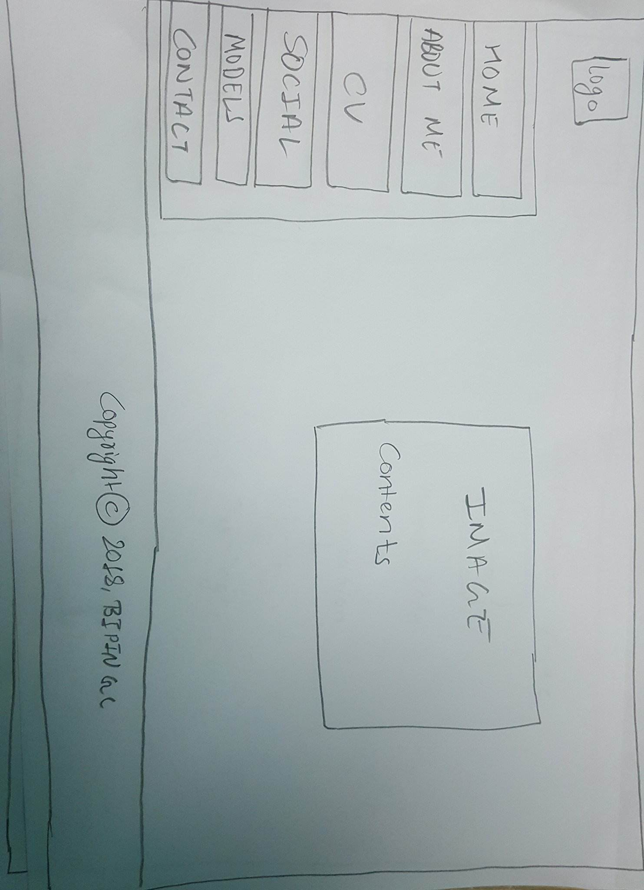

1.Introduction
University of Northampton provides us an assignment for our 1st semister in web development. In the assignment we are asked to make our CV in HTML and CSS to make web page. In our web page we are given to make six pages of web site in which we have index.htm, about.html, cv.html, contact.html, social.html and models_gp.html. In index.html we have to make our hope page. In about.html we have to describe about ourself. In cv.html we have to write about our education, experience,trainings and personal informations. In contact.html we should provide information about our address with the help of google map and one table to fill up. In social.html we have to link our social medias. And, in models_gp.html we need to write our report about assignment.
2.Groupwork
For the given assignment we had disscussion how to do the work. All the members of the group gave their view about how to do the work. One of my group member told really interesting idea how to do the work so according to his tip I tried to make the web page. When ever we feel any difficulty we discuss with each others and we get to the final results. For such a great help I like to thank them.
3.Design
I tried to make the design of the page before coding in HTML and CSS. Following are some designs of my web page.

A)Wireframes
I)Index page
This is the first page of the web site from which we can go to all the page easily.
II)Contact page
In this page the user can ask their queries by filling their the form. They can also get the location of the creator.
III)About Page
In this page the user can read the saying of the creator about their properties.
IV)CV page
This page gives the information of creator like the experience they got, training they got,skills and personal informations.
V)Social page
This page contain the information about the social medias the creator is linked with.

4.Screen Mock-ups
I)Mock-up of Index page
Home Page
II)Mock-up of Contact page
Contact Page
III)Mock-up of About page
About Page

IV)Mock-up of Cv page
CV Page

V)Mock-up of Social page
Social Page

6.Responsive Mock-ups
I)Responsive mockup of Index Page
This is the responsive mockup of homepage.

7.Navigation Diagram
This is my navigation Diagram. From this navigation you can enter all the six pages.

9.Conclusion
There are six pages to be made in this assignment. All the pages are made and the pages are checked whether they are responsive or not. The evidence of responsive is shown above in the report. The report page contains the wireframes and design of index, contact, about, cv, social and model. Responsive wireframes are also included in this report. Mock-ups of the webpages are taken screenshot and is included in the report. Similarly responsive mock-ups are also made and the evidence can be shown above in the report.
The six pages are also validated and the evidence is shown above in the report. All the information such as loading time is included in the webpage validation.The validation is done through w3 validation.
Before creating these pages many research were done. Many tools,widgets were tested and finally this webpage was created. If the time was long enough than I think I could have make the pages much better.
The first term material was enough to make these pages. We learn about how to put files in github. We learn about Css, creating a form,google material design,css3 and a introduction about javascript. I think that these materials were enough for us to create these webpages.
10.Reference
Brandeps.com. (2018). Brand Logos In Vector EPS Format | BrandEPS. [online] Available at: https://www.brandeps.com/logo/F/Facebook-01-thanks?filetype=zip [Accessed 22 Apr. 2018].
Brandeps.com. (2018). Brand Logos In Vector EPS Format | BrandEPS. [online] Available at: https://www.brandeps.com/logo/I/Instagram-Icon-01-thanks?filetype=zip [Accessed 22 Apr. 2018].
Brandeps.com. (2018). Brand Logos In Vector EPS Format | BrandEPS. [online] Available at: https://www.brandeps.com/logo/P/Pinterest-01-thanks?filetype=zip [Accessed 22 Apr. 2018].
Brandeps.com. (2018). Brand Logos In Vector EPS Format | BrandEPS. [online] Available at: https://www.brandeps.com/logo/G/Gmail-01-thanks?filetype=zip [Accessed 22 Apr. 2018].
Brandeps.com. (2018). Brand Logos In Vector EPS Format | BrandEPS. [online] Available at: https://www.brandeps.com/logo/S/Skype-Icon-01-thanks?filetype=zip [Accessed 22 Apr. 2018].